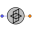

| Symbol | Name | Description |
| AOASensor [+] | Angle of atack sensor | |
| ARI [+] | ARI actuator | |
| AccelSensor [+] | Acceleration sensor | |
| Actuator [+] | Control surface actuator | |
| F16 [+] | F16 example | |
| F16Aerodynamics [+] | F-16 aerodynamic response | |
| F16Engine [+] | F-16 engine response | |
| F16_Autopiloted [+] | F16_Autopiloted example | |
| F16prAutopilot [+] | F-16 lateral-directional CAS (Control Augmentation System) autopilot | |
| F16qAutopilot [+] | F-16 pitch-rate CAS (Control Augmentation System) autopilot | |
| Frame [+] | Non-linear six-degrees-of-freedom aircraft body | |
|  | GyroSensor [+] | Absolute angular velocity sensor |
| SDLSensor [+] | Sideslip angle sensor | |
| Trimmer [+] | Calculates initial state variables for some steady flight conditions |
Document generated automatically (Date: 2019:01:23, Time: 00:19:17)